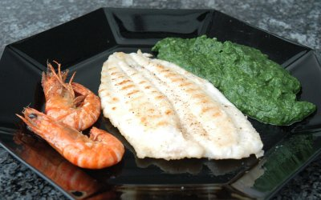

| Zutaten für 4 Personen: | |
| 4 | Seezungen |
| 4 | Scampi |
| Mehl | |
Scampi ohne Darm mit Öl bepinseln und mit Salz und Pfeffer würzen.
Seezungen mit Salz und Pfeffer würzen und im Mehl wenden und gut abklopfen.
Auf dem eingeölten Grill braten; jede Seite der Fische nach 2 bis 3 Minuten um 45 Grad drehen - das ergibt ein schönes Muster.
Züri Woche Sommer 1996, Grill Tipps
Hat am 3.8.2008 ausgezeichnet geschmeckt. Da ich zur Zeit keinen Grill habe, bereitete ich das Gericht in der Grillpfanne zu. Seezunge kostet mit 140 CHF pro kg so viel, dass die Migros das gar nicht mehr verkauft. Ich wich auf eine Rotzunge zu 85 CHF pro kg aus. RE
@LINKBACK_TAG@ @WAKELOCK@